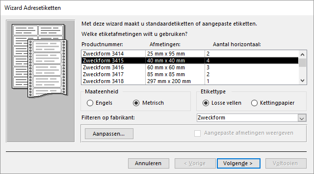
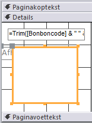
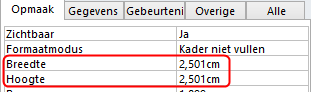
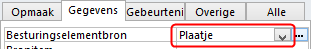
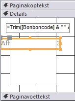

Een voorbeeld van een rapport met afbeeldingen van bonbons op etiketten.
In deze opdracht wordt een rapport gemaakt met de afbeeldingen van de bonbons en de
bijbehorende bonbonnaam en bonboncode. Daarvoor worden etiketten gebruikt met op elk
etiket de gegevens van de bonbon.
Open de database snoep2016.accdb.
Selecteer de tabel Bonbons.
Kies tab Maken > Etiketten (groep Rapporten).
Selecteer maateenheid Metrisch, fabrikant Zweckform en dan product
Zweckform 3415.
Figuur 1: Keuze etikettype Zweckform 3415

Klik op Volgende.
In het scherm dat nu getoond wordt kun je het lettertype en de kleur voor de
tekst wijzigen.
Accepteer de standaardinstellingen en klik op
Volgende.
Maak het volgende Modeletiket:
{Bonboncode} {Bonbonnaam}
Tussen de twee velden is 1 spatie.
Klik op Volgende. Specificeer oplopend sorteren op
Bonboncode.
Klik op Volgende. Noem het rapport Overzicht
bonbons
Klik op Voltooien.
Het rapport wordt gegenereerd en verschijnt in de weergave
Afdrukvoorbeeld.
Schakel over naar de Ontwerpweergave.
Klik op tab Ontwerp > Kader voor afhankelijk object (groep
Besturingselementen) en teken hiermee op het etiket een kader van ca. 2,5 cm bij
2,5cm.
Figuur 2: Kader voor het object

Zorg dat het kader geselecteerd blijft en breng dan via het
Eigenschappenvenster de volgende wijzigingen aan:
In tab Opmaak: zet Breedte en
Hoogte op 2,5 cm: Figuur 3: Afmetingen van het objectkader instellen 
Waarschuwing: Het is mogelijk dat Access de afmetingen
iets aanpast.
In tab Gegevens: kies voor de eigenschap
BesturingselementbronPlaatje: Figuur 4: Besturingsbron voor het object instellen 
Selecteer op het etiket het bijschrift dat zich grotendeels achter het kader
bevindt.
Bijschrift selecteren

Verwijder het bijschrift via de Delete toets.
Schakel over naar Afdrukvoorbeeld.
Het is nu bijna goed. Alleen de afbeeldingen beginnen niet allemaal op
dezelfde hoogte waardoor het beeld er wat schots en scheef uitziet. Voor de
tekst van de Bonboncode en Bonbonnaam moet nu nog een vaste hoogte ingesteld
worden zodat alle plaatjes op dezelfde hoogte geplaatst worden.
Schakel over naar de Ontwerpweergave, selecteer het
tekstvak en zet de eigenschap Hoogte op
1cm. Stel ook de eigenschappen Te
vergroten en Te verkleinen in op
Nee.

 (groep
Besturingselementen) en teken hiermee op het etiket een kader van ca. 2,5 cm bij
2,5cm.
(groep
Besturingselementen) en teken hiermee op het etiket een kader van ca. 2,5 cm bij
2,5cm.